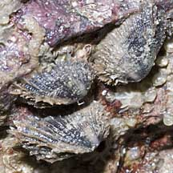
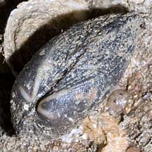
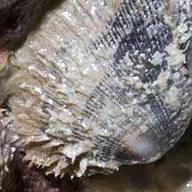
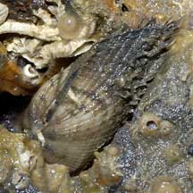

|
|
| molluscs text index | photo index |
| Phylum Mollusca > Class Bivalvia > Family Arcidae |
| Barbatia
ark clam Barbatia sp. Family Arcidae updated May 2020 Where seen? This little clam is commonly seen stuck under stones on our Southern shores, sometimes a few clustered together. But it is often overlooked as its 'hairy' shell camouflages it well. Features: About 2.5cm long. The sturdy two-part shell is oval with fine ribs. There is usually a layer of fine brown hairs (called the periostracum) covering the shell. The hairs grow particularly thickly towards the shell opening. The animal is usually firmly attached to the underside of stones and rubble, usually with the shell opening facing the hard surface. |
|
 St John's Island, Mar 05 |
 St. John's Island, Feb 11 |
 |
| Barbatia ark clams on Singapore shores |
On wildsingapore
flickr
|
| Other sightings on Singapore shores |
 Tuas, Mar 06 |
|
Links
References
|